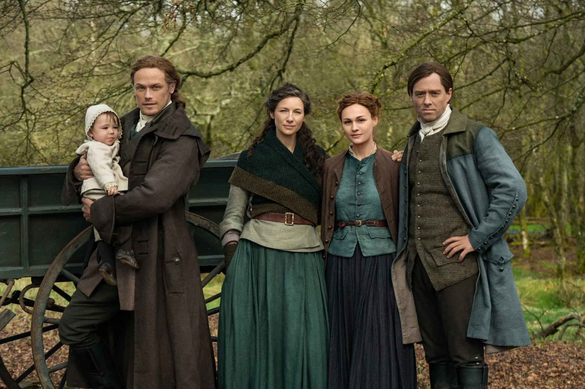
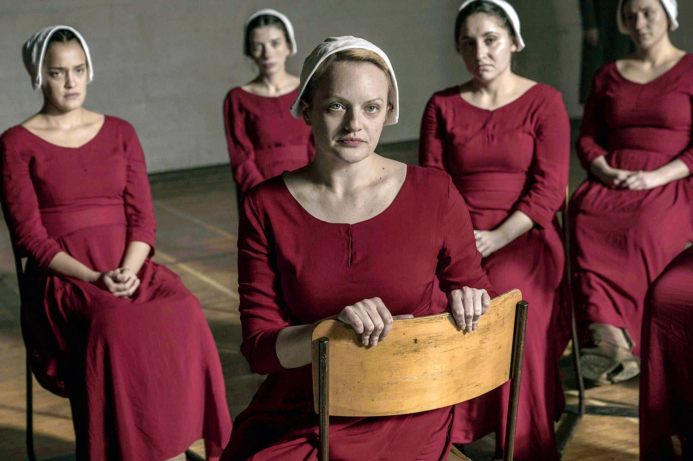

- Outlander
- Disponível na Netflix
- Quantidade de episódios: 75
- Elenco: Caitriona Balfer, Sam H, Tobias Menzies 
- The Handmands Tale
- Disponível no Globo Play
- Quantidade de episódios: 46
- Elenco: Elizabeth Moss, Yvonne Strahovski, Joseph F 
- Greys Anatomy
- Disponível no Globo Play
- Quantidade de episódios: 380
- Elenco: Ellen Pompeo, Patrick D, Sandra Oh
- Stranger Things
- Disponível na Netflix
- Quantidade de episódios: 34
- Elenco: Millie Bobby Brown Finn Wolfhard Noah Schnapp